Gestão de usuários
Antes de prosseguir, vamos recapitular alguns termos-chave:
- Um usuário é uma pessoa que tem um perfil para administrar ou consultar as informações de uma conta.
- Um perfil é um conjunto de permissões para acessar uma conta.
- Um usuário pode ter um ou vários perfis, o que significa que um usuário pode acessar várias contas e múltiplos comércios.
Para obter mais informações, leia conceitos do Módulo PayU.
Permissão necessária
Para ter acesso a este módulo, você precisa ter um perfil com a seguinte permissão habilitada:
- Listar Usuários
Esta permissão permite que você pesquise um usuário específico. - Gerenciar Usuários
Consulte Perfis e permissões para obter mais informações.
Gestão de usuários
Para gerenciar usuários, abra sua conta PayU e clique no menu Configuração na parte superior da tela. Em seguida, selecione Gestão de usuários.
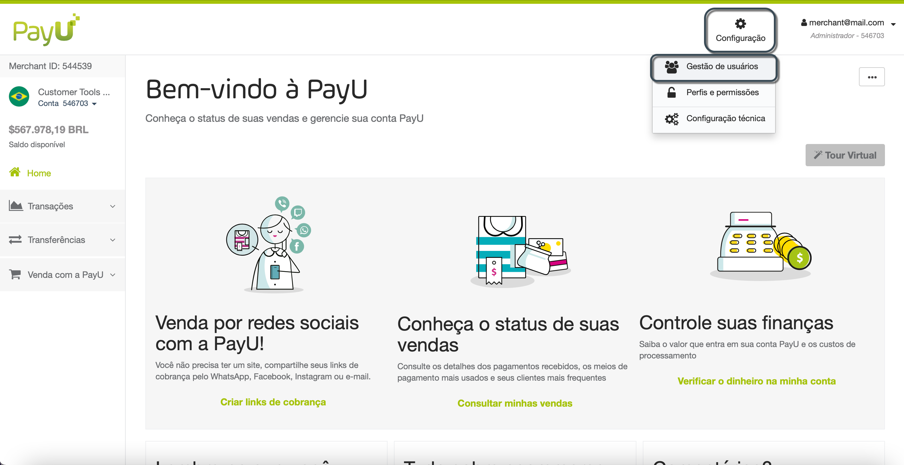
O módulo Gerenciar usuários abre aqui. Você pode encontrar uma lista dos usuários disponíveis, assim como seus status, as contas que eles podem acessar e seus perfis.

Observação
Os usuários marcados com uma estrela verde ( ) são usuários padrão que não podem ser excluídos (desativados).
) são usuários padrão que não podem ser excluídos (desativados).
Adicionar usuários
Você pode criar um usuário usando seu endereço de e-mail ou fornecendo um nome de usuário. Siga as etapas abaixo para criar um usuário.
- No módulo Gerenciar usuários, clique em Adicionar usuário.
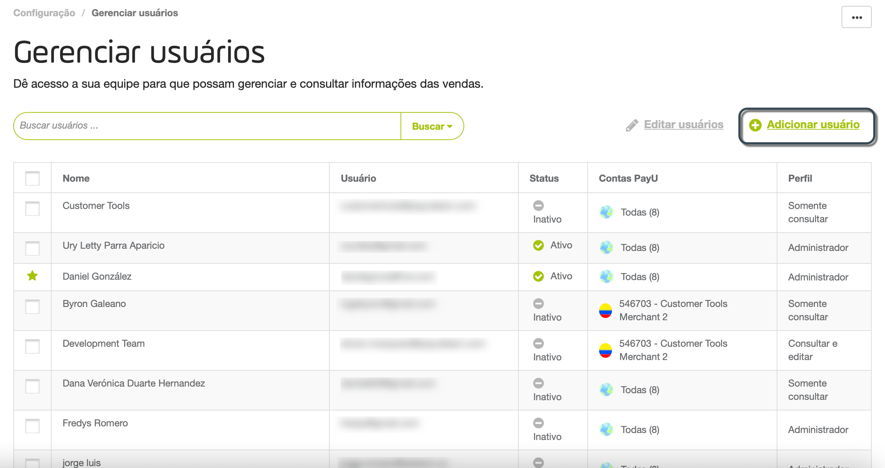
- A janela Adicionar usuário aparece. Aqui, você pode fornecer os dados da pessoa que terá permissão para cobrar pagamentos pela internet e verificar os dados dos seus pagamentos, de acordo com a permissão que você fornecer.
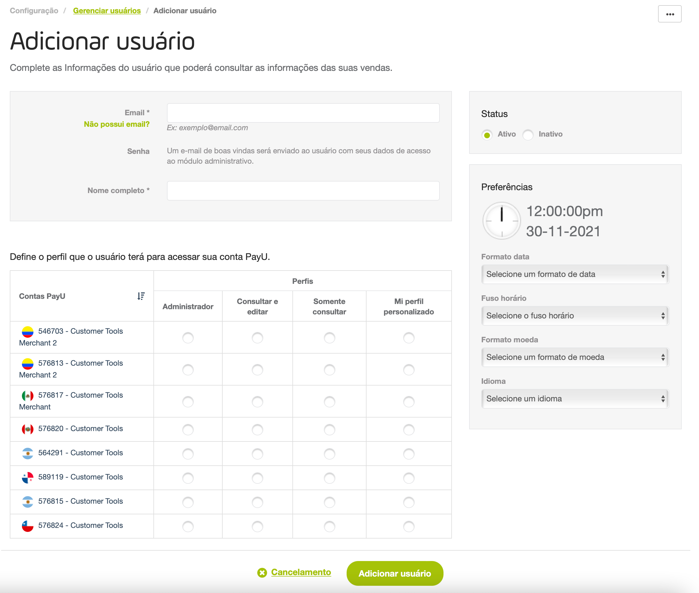
- Forneça as seguintes informações do usuário:
- Email: Endereço de e-mail do novo usuário. PayU envia a informação de login para este endereço de e-mail. Certifique-se de que é válido e de que o usuário tem acesso a ele.
Como alternativa, você pode criar um usuário sem usar um endereço de e-mail. Isso é útil especialmente quando o usuário que você deseja criar está vinculado a uma função e não a uma pessoa específica. Para fazer isso, clique em Não possui email? e forneça as seguintes informações:- Usuário: nome de usuário usado para fazer o login. Este nome de usuário não pode conter números nem caracteres especiais.
- Email (Admin): forneça o e-mail do usuário administrador para o qual PayU enviará as opções para gerar ou recuperar a senha deste usuário.
- Nome completo: nome do usuário que você deseja criar.
- Status: defina se o usuário que você deseja criar é Ativo ou Inativo.
- Configure as preferências do usuário. Você pode configurar qualquer um dos seguintes:
- Formato de data: altere o formato em que deseja exibir as datas em seu Módulo PayU,
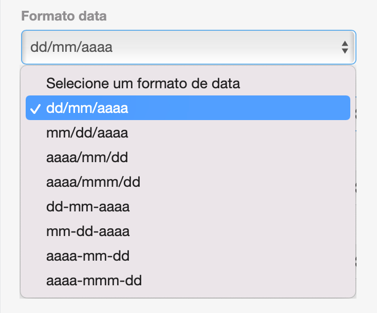
Você pode usar qualquer um dos seguintes formatos:
| Formato | Exemplo 24 de agosto de 2021 |
|---|---|
| dd/mm/aaaa | 24/08/2021 |
| mm/dd/aaaa | 08/24/2021 |
| aaaa/mm/dd | 2021/08/24 |
| aaaa/mmm/dd | 2021/Ago/24 |
| dd-mm-aaaa | 24-08-2021 |
| mm-dd-aaaa | 08-24-2021 |
| aaaa-mm-dd | 2021-08-24 |
| aaaa-mmm-dd | 2021-Ago-24 |
- Fuso horário: altera o fuso horário do país no qual deseja exibir as informações da transação.
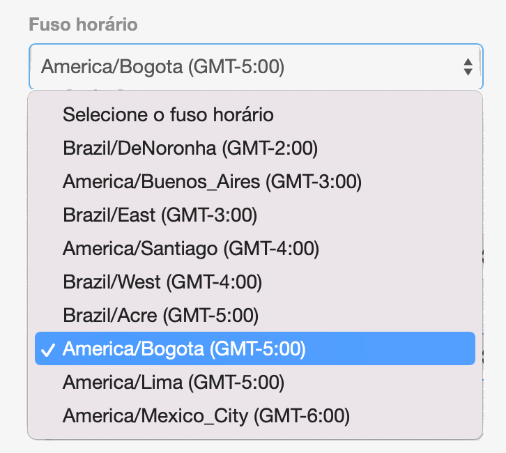
- Formato de moeda: altere o formato de exibição dos valores monetários mostrados em seu módulo PayU.
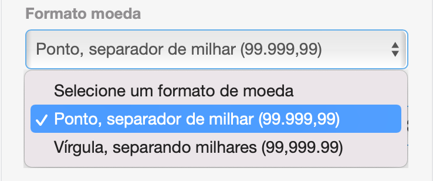
- Idioma: altere o idioma do seu módulo PayU.
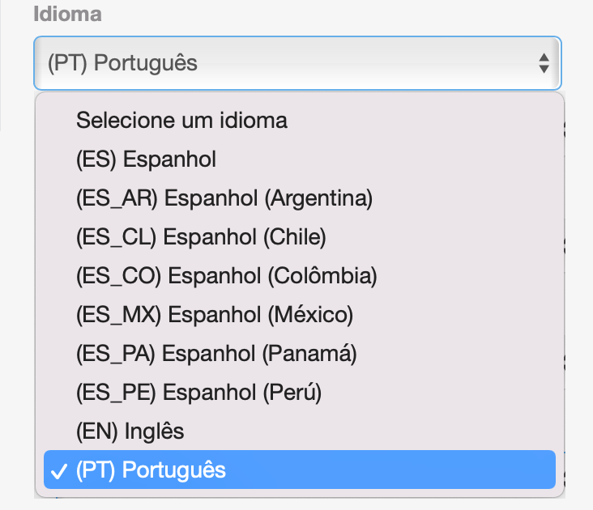
- Na parte inferior da tela, todos os perfis criados (padrão e personalizados) são carregados junto com as contas do comércio atual. Configure o acesso para cada conta definindo um perfil. Se você não quiser habilitar o acesso a uma conta, não selecione um perfil.
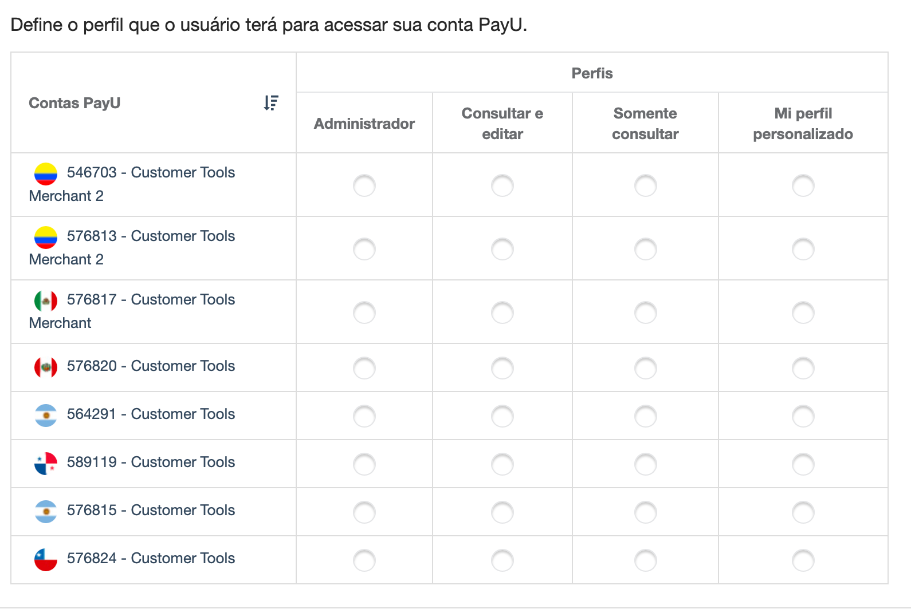
Observação
Se quiser atribuir um perfil personalizado, você deve criá-lo primeiro.- Assim que terminar, clique em Adicionar usuário.
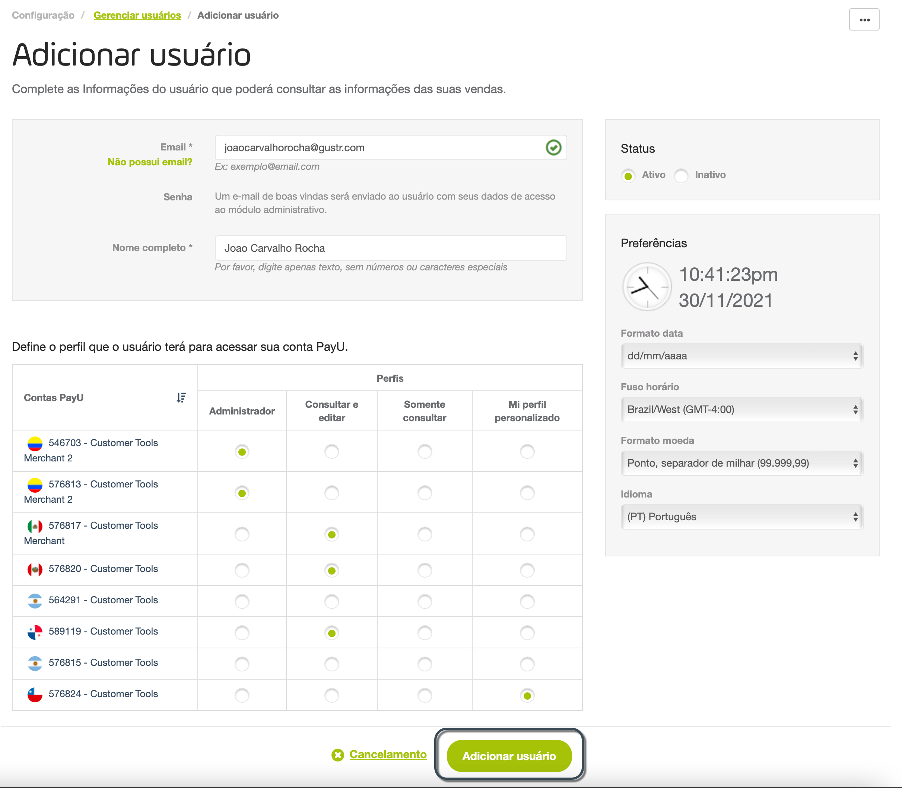
- Agora você adicionou o novo usuário! Enviamos um e-mail para o endereço do usuário para que ele possa acessar o módulo PayU.
TO novo usuário deve ativar a conta usando o botão Ativar minha conta no e-mail.
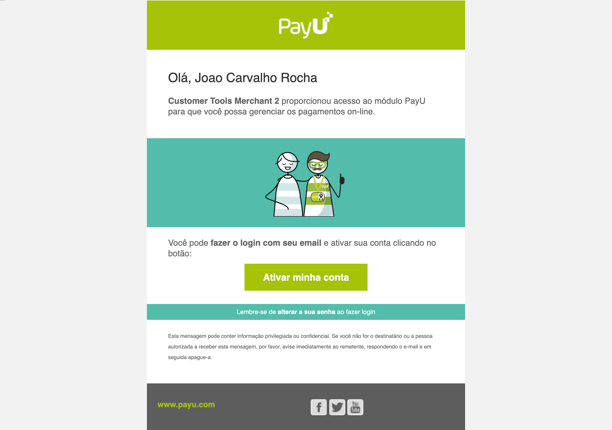
Observação
Se o usuário foi criado sem de e-mail, as instruções para ativar a conta são enviadas para o e-mail Admin que você definiu.- O novo usuário precisa definir uma nova senha para acessar a conta
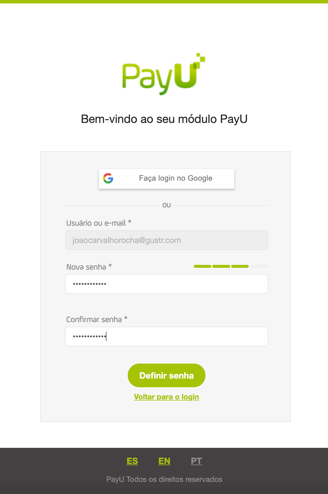
- Depois que o usuário define a nova senha, ele pode acessar as contas selecionadas usando suas credenciais.
Buscar usuários
Quando você precisa encontrar um usuário específico, pode usar as opções de filtro para encontrar um ou mais usuários que atendam a determinadas condições.
No módulo Gerenciar usuários, clique no campo Buscar usuários para ver os filtros disponíveis
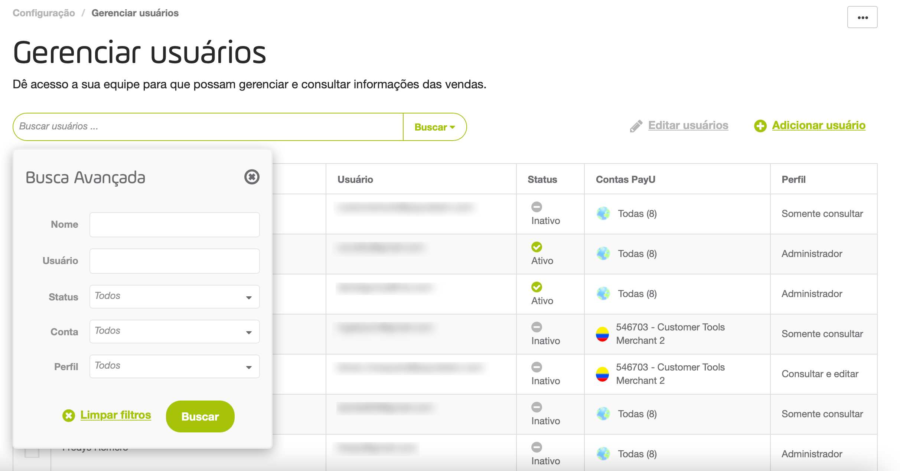
Depois de selecionar os filtros, clique em Buscar. Todos os usuários que atendem às condições selecionadas são exibidos na tabela.
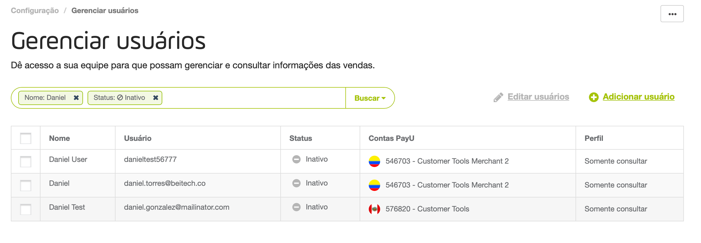
Se você deseja remover um filtro, clique no ícone x próximo a ele.
Editar usuários
No módulo Gerenciar usuários, você pode atualizar algumas informações de um usuário. Para atualizar um usuário, pesquise e clique nele.
A janela Editar usuário aparece.
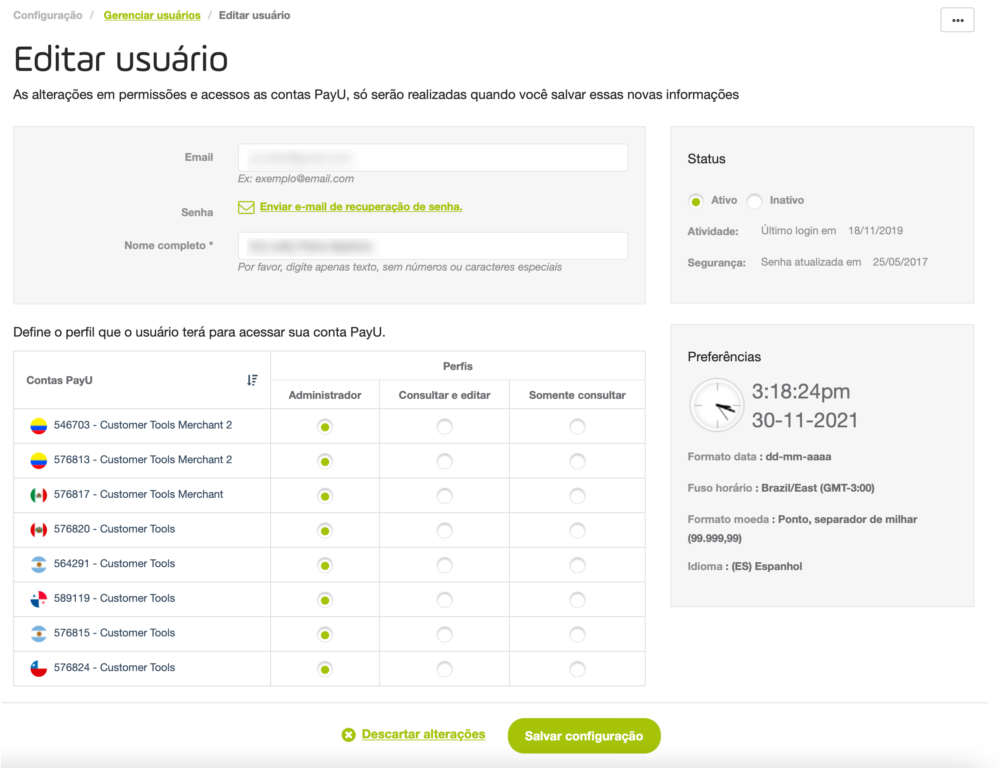
Você pode atualizar as seguintes informações:
- Nome completo de um usuário
- Solicitar uma recuperação de senha.
- Atualizar o status do usuário (ativo ou inativo)
- Alterar ou remover o perfil atribuído a uma determinada conta.
Observação
A informação das preferências do usuário não pode ser atualizada com esta opção, esta informação é atualizada por cada usuário individualmente.Assim que terminar, clique em Salvar configuração para confirmar as alterações.
Editar vários usuários
Para editar vários usuários, pesquise-os e use a caixa de seleção à esquerda. Clique em Editar usuários (n).
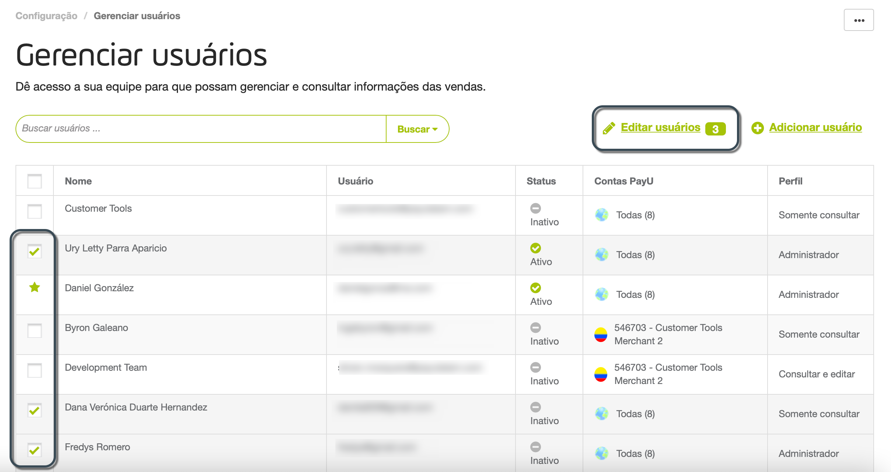
A janela Editar usuários (n) aparece, onde você pode atualizar as seguintes informações:
- Solicitar uma recuperação de senha para todos os usuários.
- Atualizar o status dos usuários (ativo ou inativo)
- Atribuir um perfil a uma determinada conta.
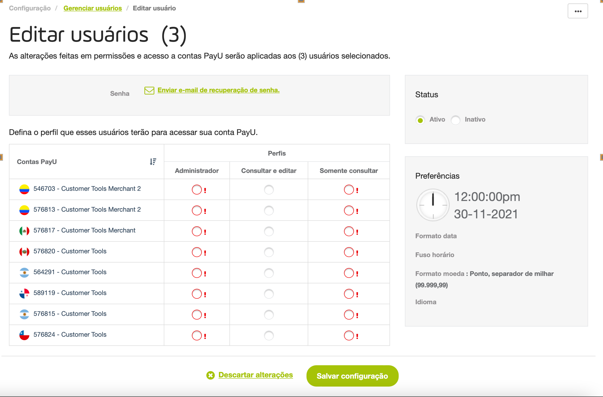
Leve em conta que usando esta opção, todos os usuários terão a mesma configuração que você definir aqui.
Assim que terminar, clique em Salvar configuração para confirmar as alterações.